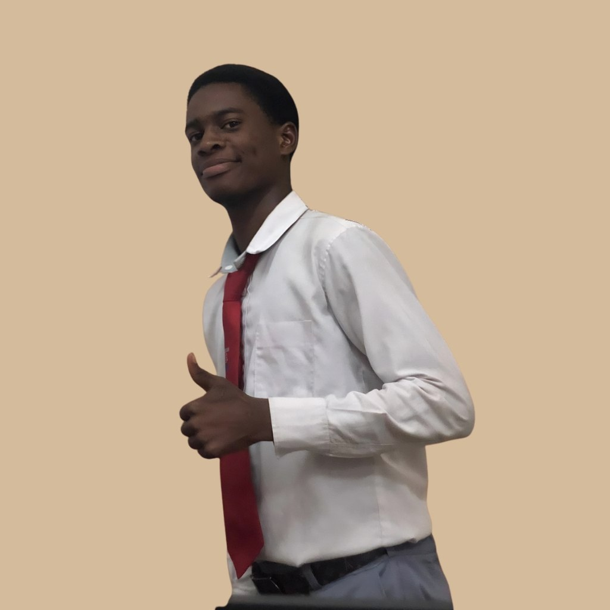

Futurisme chaud
Je cherche un web plus rare, plus sensuel et plus marquant.

Développeur full-stack orienté produit, je mélange intensité visuelle et précision technique pour donner à chaque interface une empreinte unique. Jeune ivoirien etudiant en IACC(Industrie Agroalimentaire et Chimique Option Contrôle).
Je cherche un web plus rare, plus sensuel et plus marquant.
Je transforme une intention visuelle forte en produit web vivant.
Étudiant en Ingénierie Chimique (IACC), Fondateur de KevyLLC et CTO d'AFB STUDIO, j'applique la rigueur implacable des protocoles scientifiques à la création d'applications web. L'erreur de milligramme en laboratoire est la faille de sécurité en développement.
En tant qu'AI Fullstack Builder, je n'aborde pas la création d'une application comme un simple exécutant, mais comme un contrôleur qualité. La machine (l'IA) produit la syntaxe, l'architecte (moi) garantit que l'édifice tiendra debout.
Développement front-end haute performance avec React, animations fluides et design responsive sans compromis.
Conception de backends robustes avec Node.js, Express et MongoDB. APIs sécurisées et évolutives.
Accompagnement stratégique sur l'expérience utilisateur et l'optimisation des parcours de conversion.
Analyse des besoins et définition de la trajectoire technique et visuelle.
Mise en place des fondations et itérations rapides sur les fonctionnalités clés.
Optimisation finale, tests rigoureux et déploiement en production.
ISTTA
Spécialisation en contrôle qualité, analyses physico-chimiques, microbiologie et HACCP.
Copalen-Ci
Immersion professionnelle : Analyse sensorielle, prélèvements, rédaction de rapports.
Projet Personnel
Développement de ce site web interactif pour présenter mes compétences.
Université LOKO
Par pilotage IA, j'ai créé la plateforme de parrainage de mon école. J'ai appelé cette plateforme LOKOLink, elle a pour...
Cliquez pour voir plusMaféré
L'idée est de moderniser la circulation communale. L'application Yély vient donc simplifier la vie aux populations dan...
Cliquez pour voir plusVous avez une vision ? J'ai l'expertise pour l'architecturer. Rejoignez-moi directement pour une discussion fluide et rapide.
Démarrer une discussion sur WhatsApp